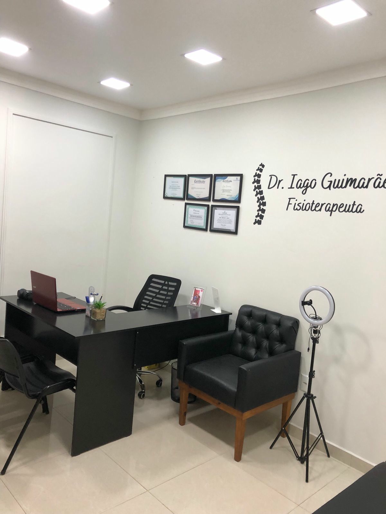

Fisioterapia e Osteopatia em Mirassol/SP
Dr. Iago Guimarães
Ajudo você a entender e tratar sua dor. Fisioterapeuta com foco em ombro e coluna.
Nota 5,0 com 14 avaliações no Google
- Fisioterapeuta
- Fisioterapia e Osteopatia
- Foco em ombro e coluna
- Segunda a sábado
Como posso te ajudar
Atendimentos
Dores no ombro
Avaliação e tratamento de dores e limitações do ombro.
Dores na coluna
Avaliação e tratamento de dores na coluna.
Reabilitação e prevenção
Recuperação do movimento e cuidado para evitar novas lesões.
Performance e qualidade de vida
Para se mover melhor no trabalho, no esporte e no dia a dia.
Osteopatia
Abordagem manual integrada à fisioterapia.
Liberação miofascial
Técnica utilizada nos atendimentos de fisioterapia.
Atendimento domiciliar
Consulte pelo WhatsApp a disponibilidade para atendimento em casa.
Recovery de atletas
Atendimento pós-prova, incluindo experiência com competidor da modalidade três tambores.
Quiropraxia e ajuste articular
Técnicas divulgadas pelo Dr. Iago, com indicação a partir da avaliação.
Agulhamento a seco
Técnica presente nos atendimentos divulgados pelo profissional.
Diferenciais
Cuidado próximo em cada sessão
Do consultório à sua casa, o Dr. Iago reúne Fisioterapia e Osteopatia com técnicas manuais. Também divulga atendimentos de recovery para atletas e recebeu uma moção de reconhecimento do CREFITO-3 em julho de 2025.
- Atendimento domiciliar: consulte a disponibilidade para sua região
- Recovery pós-prova, com experiência na modalidade três tambores
- Moção de reconhecimento do CREFITO-3 em julho de 2025
- Horários até 21h durante a semana e atendimento aos sábados
Atendimento
Horários e endereço
| Segunda a sexta | 8h às 21h |
|---|---|
| Sábado | 8h às 14h |
| Domingo | Fechado |
Horários informados no Google; confirme pelo WhatsApp.
R. Paulo de Faria, 1948 – Santa CruzMirassol/SP · CEP 15138-032